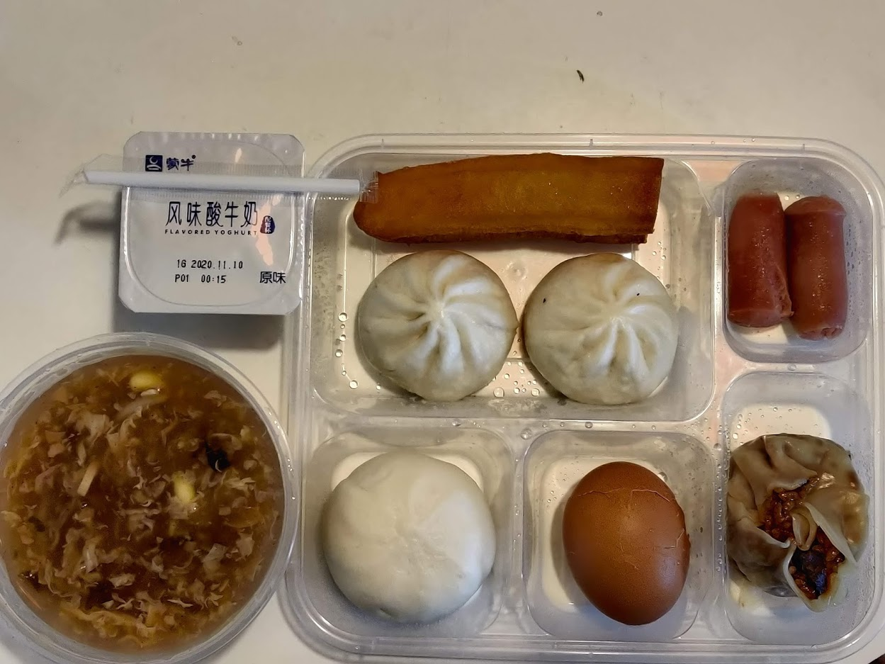
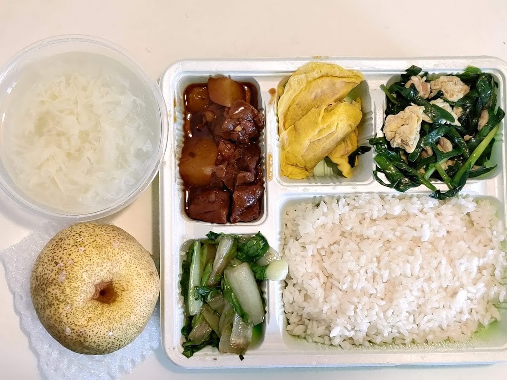
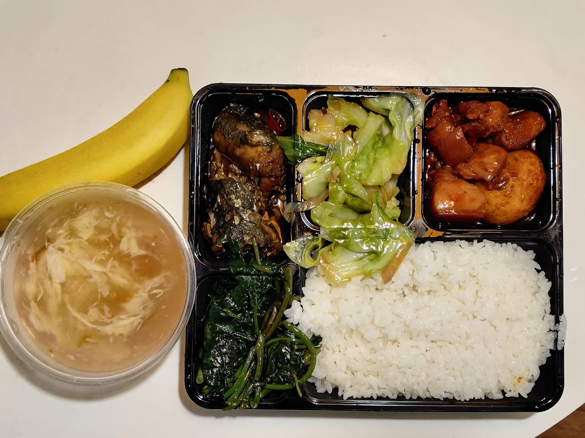
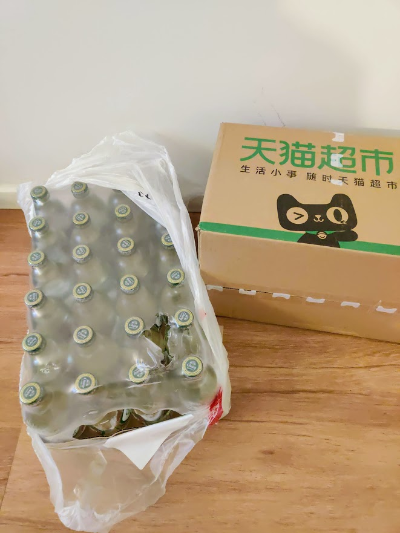

柬埔寨至上海-隔离记录-Day5
今天睡到了7点20分，是隔离以来第一次睡懒觉。
早餐好像比前几天丰盛一点点。那个油条是速冻版的，改良版的胡辣汤我很满意。

午餐出现了本地特色，蛋饺，好吃。还有土豆烧牛肉、韭菜菠菜炒鸡蛋。

晚餐的时候，发现餐盒换了一款。难道换了新的配餐公司？还是只是上一批次的餐盒用光了而已。

吃完发现，应该只是换了餐盒。味道还是没什么改变。
下午终于收到了双十一订购的天猫超市货品，苏打水是隔离的好伙伴。

思考：隔离期间体温测量的流程，为什么是这样设置的？
我入住的隔离酒店，体温测量的流程：每次工作人员敲门测量，并将体温记录在一份纸质表格上。测量后的结果告知我以后，我需要扫描一个二维码填写这次的体温数据。
参考其他人的隔离记录，有的酒店是发一支体温计，每人每天测量两次并上报；有的酒店是上门测量后由工作人员记录。
首先，发放温度计自行测量上报，这个流程肯定是充满风险的。难以避免出现不测量直接填报，虚假填报的情况。
其次，扫描二维码填报体温数据，这个工作如果交给工作人员，工作量偏大，有可能出现名字录入错误或者数据录入错误的情况。这样一名工作人员就可以完成全部的测量+数据收集工作。提高效率节省人力资源。
本文地址 https://iamfuhui.github.io/2020/11/16/jian-bu-zhai-zhi-shang-hai-ge-chi-ji-lu-day5/